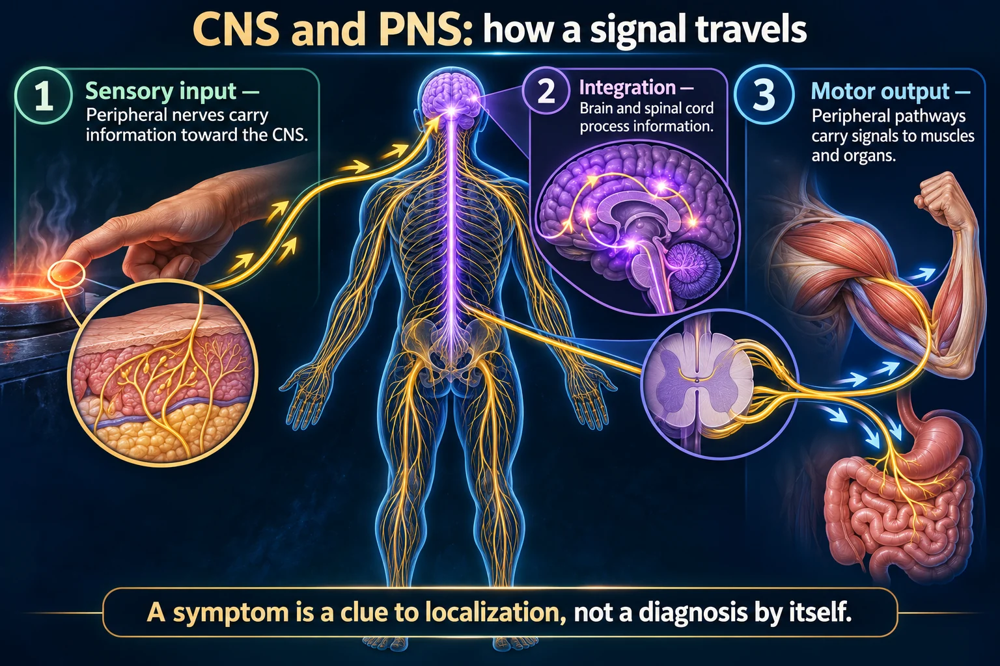

Where the nervous system divides, why it matters clinically, and how one fact predicts whether damage will heal.

Central does not regenerate and peripheral does. That single fact predicts more of neurology than any list.
A symptom is a clue to localization, not a diagnosis by itself.
Sensory input
Peripheral nerves carry information toward the CNS.
Integration
Brain and spinal cord process information.
Motor output
Peripheral pathways carry signals to muscles and organs.
Central nervous system
Brain and spinal cord: processing, coordination and many reflex pathways.
Peripheral nervous system
Nerves outside the CNS include sensory, somatic motor and autonomic pathways.
Localize the problem
Distribution, reflexes, strength and sensation help identify which pathways may be affected.
Central = brain and spinal cord. Peripheral = everything else. One rule follows from that split and explains most of neurology:
CNS does not regenerate. PNS can. A severed peripheral nerve may slowly recover. In a spinal cord injury the primary damage is usually permanent.Side note (newer wording): CNS axon regrowth is limited, but functional recovery can still occur after a CNS injury; it varies with how severe the injury is and with rehabilitation. Not every peripheral nerve injury recovers either.
| Central (CNS) | Peripheral (PNS) | |
|---|---|---|
| Contains | Brain, spinal cord | Cranial & spinal nerves, ganglia |
| Myelin made by | Oligodendrocytes | Schwann cells |
| Regenerates? | Essentially no | Yes, slowly |
| Protected by | Skull, vertebrae, meninges, blood–brain barrier | Little protection |
| Demyelinating disease | Multiple sclerosis | Guillain–Barré |
That last row is a whole exam question. MS and GBS are both demyelination — the difference is where. MS relapses and remits in the CNS; GBS ascends through peripheral nerves and usually recovers.
The PNS divides again by what it controls:
| SYMPATHETIC — “fight or flight” | PARASYMPATHETIC — “rest and digest” | |
|---|---|---|
| Heart rate | Up | Down |
| Pupils | Dilate | Constrict |
| Airways | Dilate | Constrict |
| Digestion | Slows, mouth dry | Speeds up, salivation |
| Bladder | Retains | Empties |
| Transmitter | Norepinephrine | Acetylcholine |
Anticholinergics block the parasympathetic system, so you get the sympathetic picture:
"Can't see, can't pee, can't spit, can't poop" — blurred vision, urinary retention, dry mouth, constipation. Plus tachycardia and flushing.
Beta blockers block the sympathetic system → slow heart rate, lower blood pressure, and bronchoconstriction — which is why non-selective ones are avoided in asthma.
It protects the brain from toxins — and also keeps most drugs out.
That is why CNS infections need antibiotics that cross the barrier, at high doses, and why inflammation (as in meningitis) actually helps drugs get in.
These newly drawn concept diagrams consolidate the retired illustration sets. The accompanying study notes and original handout links remain on this page.